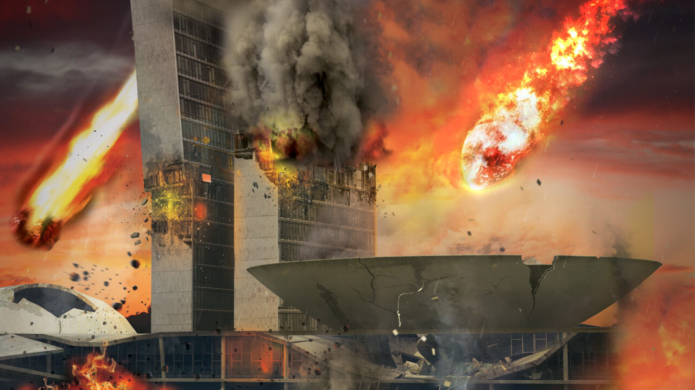

Ep02 - Apocalipse: escolha o seu preferido
Nesse podcast conversamos sobre as principais formas de apocalipse e qual é o melhor para sofrer.
44 minutos - 1 de setembro de 2020
Nesse podcast conversamos sobre as principais formas de apocalipse e qual é o melhor para sofrer.
44 minutos - 1 de setembro de 2020